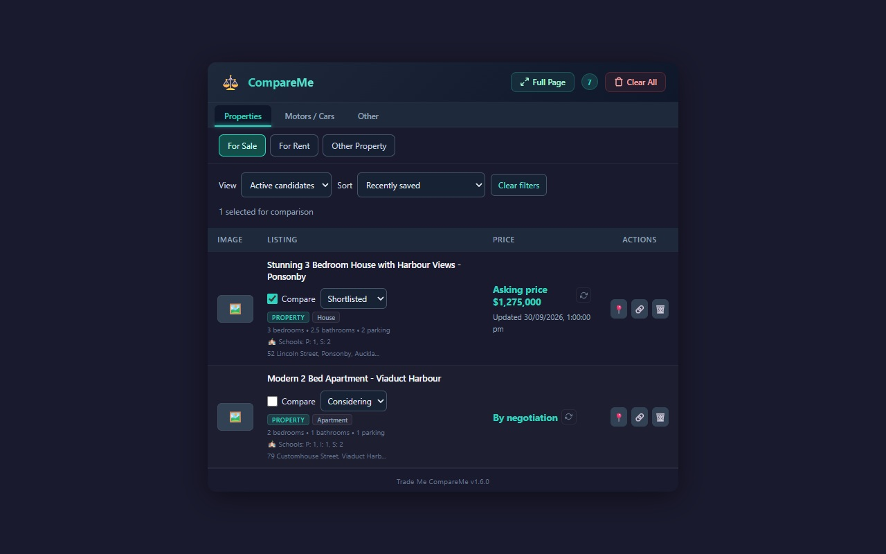
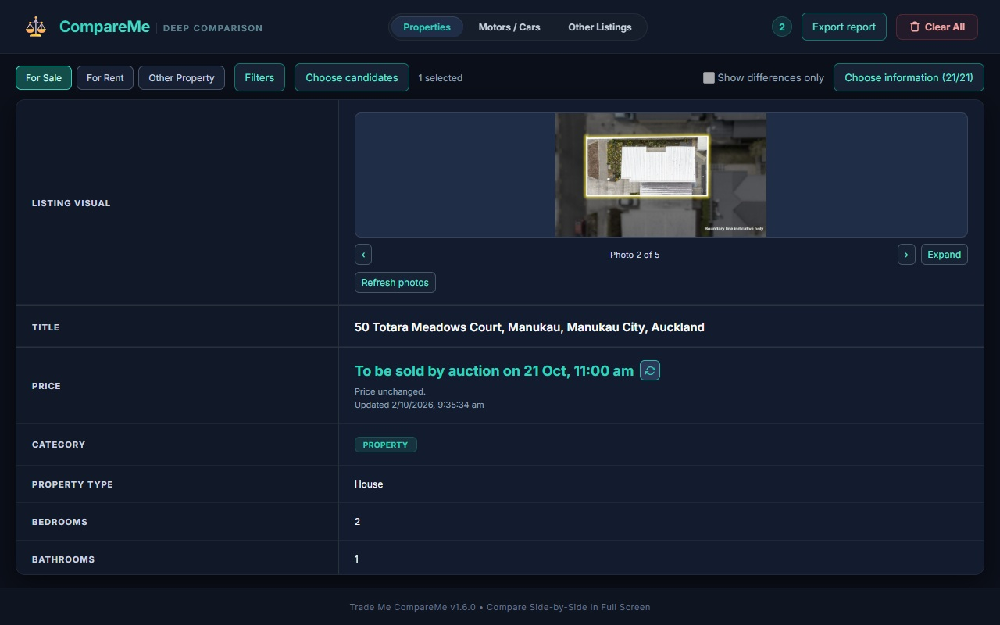
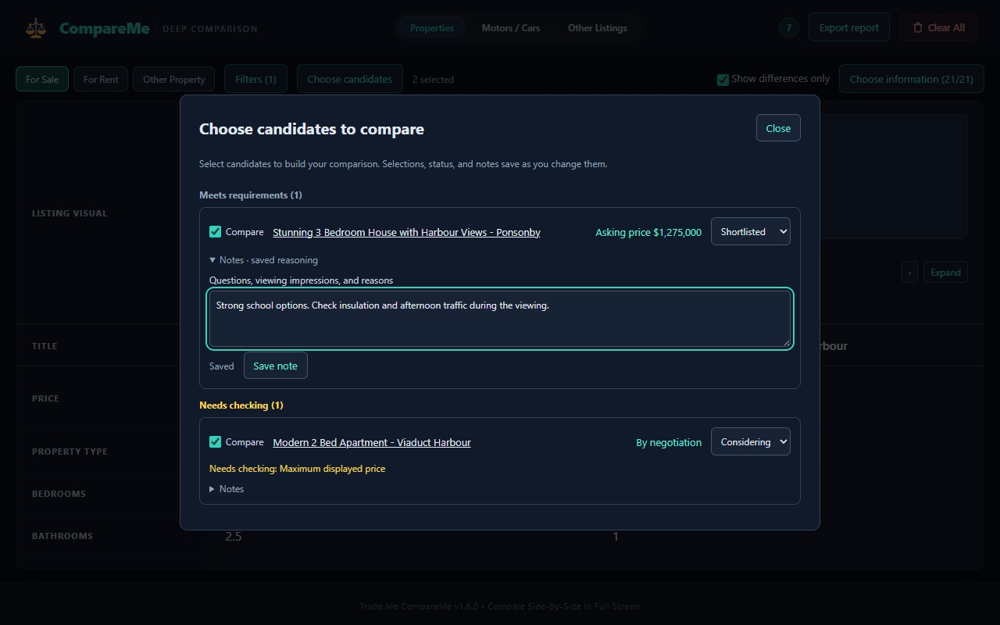

Save Kiwi properties and cars, compare your chosen information, explore photo galleries, and download a PDF report with your notes.
Open the Trade Me CompareMe listing in the Chrome Web Store using Chrome on your computer. Click Add to Chrome, review the permissions, and confirm Add extension. Pin CompareMe from Chrome’s Extensions menu, then visit a Trade Me listing and choose Save to Compare.
Install from the Chrome Web Store →This page showcases CompareMe 1.6.0. Check the Chrome Web Store listing for the version currently available.
Compare homes for sale and rent separately. See bedrooms, bathrooms, parking, floor and land area, sale method, ownership, rental availability, school information, and Google Maps links.
Extracts odometer, body style, transmission, seats, fuel type, plate, year, owners, energy economy, auction closing dates, and displays WOF and Registration status instantly.
Saved listings, notes, decisions, and preferences stay in your browser. Reports are generated on your device. No accounts or analytics; loading photos and refreshing listings contacts their providers.
Set requirements, keep uncertain options in Needs checking, and choose which candidates enter the comparison. Sort by displayed price or mileage without an automated recommendation.
Mark candidates Considering, Shortlisted, or Ruled out. Record viewing impressions and questions in plain-text notes. Restore a ruled out option whenever you reconsider.
Hide identical factual rows and compare the differences that matter. Equivalent area and mileage formats are normalised, while missing information stays visible.
PDF is the default: preview a saved snapshot of your current comparison or every listing in the group. Include photos, complete notes and descriptions, and clickable source links. CSV is available for spreadsheets.
Browse photos one at a time, expand them, and zoom up to 4× with panning. Refresh photos on demand. If Trade Me needs to render the full gallery, open the listing and use Update saved details.
Choose which information appears in each comparison group. Your PDF starts with those choices, and you can change the report fields, notes, photos, and differences independently.
Manage candidate statuses and comparison selections directly from the toolbar. Full Page opens the same category and choices.

The comparison sits directly beneath the category toolbar. Open Filters or Choose candidates when needed, browse listing photos, and choose the information shown on the page and in your PDF.

Preview the actual PDF before downloading. A4 landscape pages keep listing columns aligned, with selectable text and readable links.
Save up to 20 listings, then open Full Page from the extension. Use the workspace to compare your candidates and take your notes into a report.

Example comparison below uses sample data. Try the dialogs, photo viewer, and exports in the installed extension. Maximum displayed price uses advertised amounts; auction or negotiation prices need checking.
| Attribute | 🚗 2018 Toyota RAV4 GXL | 🚗 2017 Mazda CX-5 GSX |
|---|---|---|
| Price | $24,990 | $22,500 |
| Odometer | 68,400 km | 84,120 km |
| Year | 2018 | 2017 |
| Fuel Type | Petrol | Petrol |
| Transmission | Automatic (CVT) | Automatic (6-Speed) |
| WOF Expiry | Oct 2026 | Mar 2026 |
| Decision notes | Ask about service history | Inspect rear-seat space |